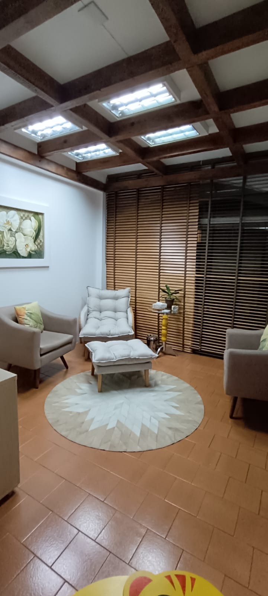

"O curioso paradoxo é que, quando eu me aceito como sou, então eu posso mudar." Carl Rogers.
Atendimento psicológico humanizado para adolescentes, adultos e casais. Um acompanhamento acolhedor para promover equilíbrio emocional, autoconhecimento e qualidade de vida.
Psicóloga e Psicoterapeuta
Ψ CRP 12/12122 Ψ
Atendimento personalizado para diferentes necessidades emocionais e psicológicas.
A psicoterapia individual, na abordagem humanista, é um espaço de acolhimento, escuta e compreensão, onde cada pessoa é vista em sua singularidade. O processo terapêutico busca favorecer o autoconhecimento, a compreensão das emoções e o desenvolvimento de formas mais saudáveis de lidar com desafios, relacionamentos, ansiedade, autoestima e momentos de sofrimento emocional.
Em um ambiente ético, seguro e sem julgamentos, a terapia auxilia o paciente a se conectar consigo mesmo, fortalecer sua autonomia e construir uma vida mais consciente e autêntica.
A psicoterapia de casal, na abordagem humanista, é um espaço de escuta, acolhimento e diálogo, onde o casal pode compreender melhor sua dinâmica relacional, suas emoções e dificuldades na convivência. O processo terapêutico auxilia na melhora da comunicação, na resolução de conflitos, no fortalecimento dos vínculos afetivos e na construção de relações mais saudáveis e conscientes.
No aconselhamento psicológico, além de ser um espaço de escuta, acolhimento e orientação emocional é voltado para questões específicas ou momentos de dificuldade. Seu objetivo é auxiliar a pessoa a compreender melhor seus sentimentos, fortalecer seus recursos internos e encontrar caminhos mais conscientes para lidar com desafios pessoais, familiares, profissionais ou relacionais.
O processo favorece o autoconhecimento, a clareza emocional e a tomada de decisões de forma mais saudável e autêntica.
O relaxamento dirigido é uma técnica terapêutica que utiliza condução verbal para promover relaxamento físico e emocional, auxiliando na redução da ansiedade, do estresse e das tensões do dia a dia. Através da respiração, da atenção ao corpo e de exercícios de imaginação e consciência corporal, a pessoa é conduzida a um estado de maior equilíbrio, tranquilidade e conexão consigo mesma.
Essa prática favorece o bem-estar emocional, o autocuidado e o desenvolvimento de maior percepção das próprias emoções e sensações.

Sou formada em psicologia pela UNIARP desde 2013, atuo na psicoterapia desde 2017, a partir da perspectiva teórica Humanista existencial- ACP Atenção Centrada na Pessoa. Possuo especialização em Psicoterapia, MBA em Gestão de Recursos Humanos. Também sou formada em Pedagogia e possuo formação e aperfeiçoamento em Hipnose moderna pelo Centro Sofia Bauer.
Ao longo dos anos tive oportunidade de atender várias demandas e temáticas existenciais que contribuíram para ampliar meu repertório de experiências.
Acredito que cada pessoa possui dentro de si potencial para crescimento, transformação e construção de novos significados. Meu objetivo é oferecer um espaço acolhedor, ético e seguro, onde cada paciente se sinta verdadeiramente ouvido, compreendido e respeitado em sua singularidade, favorecendo o autoconhecimento, a expressão das emoções e o desenvolvimento de novas perspectivas sobre si e sobre a vida.
Um ambiente acolhedor, seguro e preparado para oferecer conforto e privacidade durante o atendimento.
Espaço preparado para proporcionar uma experiência tranquila e humanizada em cada sessão.
Rua XV de Novembro, 655 - Centro, Maravilha - SC, 89874-000, Brasil.
Abrir no Google Maps